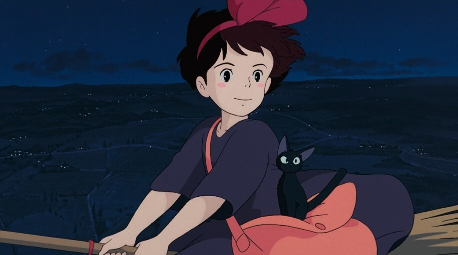

NEWS/STORY/CHARACTER/MOVIE/REVIEW
NEWS
1989.07.29
스튜디오 지브리의 네 번째 작품으로 1989년 7월 29일, 일본에서 개봉했다. 2007.11.22
한국 메가박스에서 2007년 11월 22일, 개봉했다. 2014.03.01
2014년 3월 1일, 책을 기반으로 한 실사 영화를 개봉했다. 2019.06.29
2019년 6월 29일, 한국 스마일이엔티와 대원미디어에서 재개봉했다. 재개봉 관람객이 첫 개봉 관람객 수를 넘었다는 모양이다.
